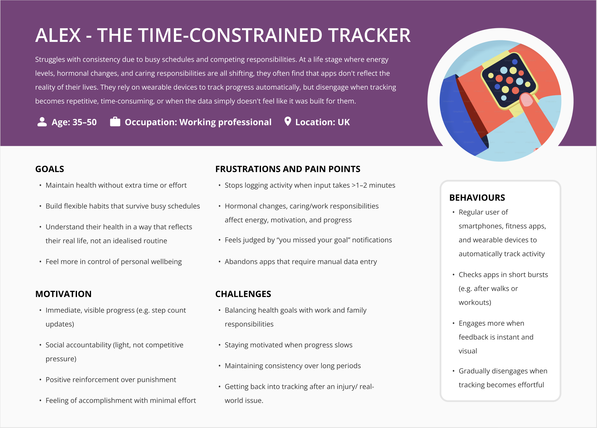
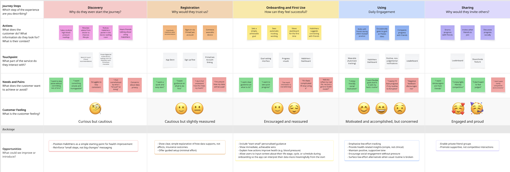
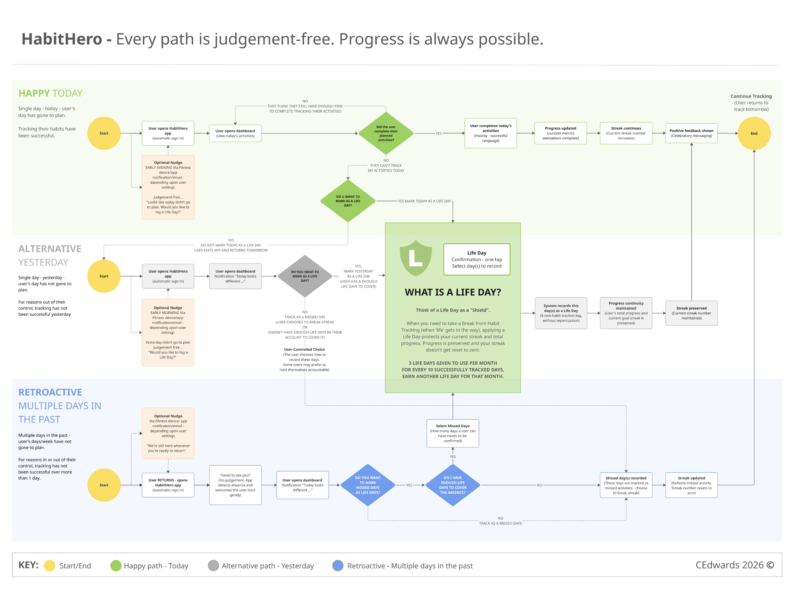
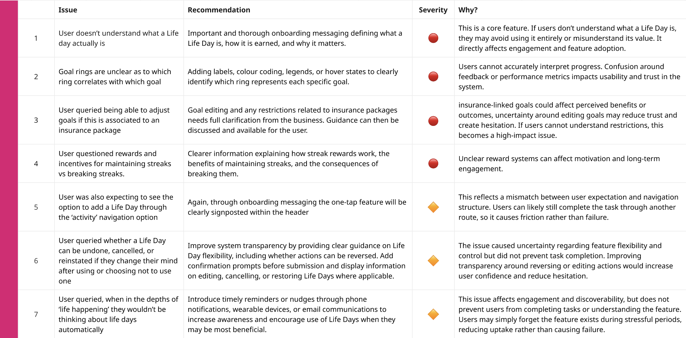
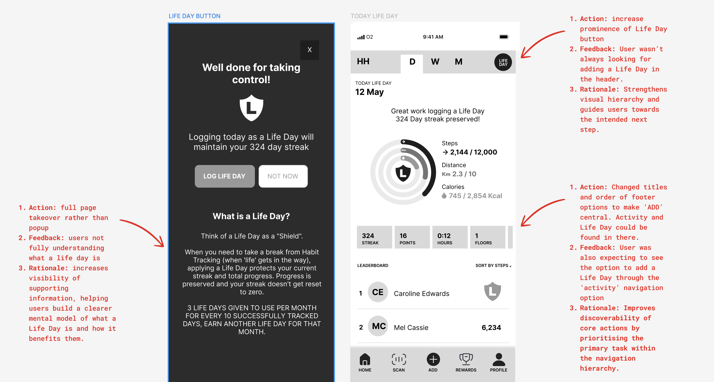

An end-to-end behaviour change product for healthcare client PrimeCare. Most habit-tracking apps punish users for missing days. HabitHero was designed to do the opposite.
PrimeCare needed a digital product to help patients build sustainable health habits - tracking steps, distance, and calories across daily, weekly, and monthly views. The challenge wasn't building a tracker. It was building one that people would stick with.
Before designing anything, I conducted user interviews and competitive analysis with PrimeCare's patient group - people managing long-term health conditions who needed sustainable behaviour change, not gamified pressure.
The pattern held across every product tested: a single missed day was treated as failure, with no distinction between "life got in the way" and "gave up." For a healthcare client, that's more than a frustrating detail. Every patient who abandons the app after one bad day is a habit that never gets the chance to stick, and a loss of the engagement data PrimeCare needed to support them.
"I gave up after missing two days. There didn't seem to be any point carrying on." - Research participant
Synthesising the interviews against the competitive analysis surfaced three recurring patterns behind every abandoned habit-tracking app.
Missing a day broke streaks - the single biggest trigger for app abandonment in every product tested.
Users could only see what they'd missed, never how far they'd come. Motivation collapsed as a result.
Bad days - illness, family, travel - weren't accommodated by any existing solution. Life was treated as failure.

Click image to view full size
Alex was built from the interview data, not invented before it. Every goal and frustration above came directly from research participants navigating the same reality: busy schedules, shifting energy levels, and caring responsibilities that most tracking apps don't account for.
"I don't need another thing telling me I've failed." - Research participant
The insight wasn't that Alex needed more motivation. It was that the app needed to tell the difference between giving up and having a bad day - and respond to each differently. That reframing is what the design opportunity below actually targets.
"When I have a day I can't keep up with my habit, I want a way to protect the progress I've already made, so one bad day doesn't feel like starting over." - Job to be done
Early analysis of the HabitHero MVP found users struggled with visual flow and information hierarchy, so these lo-fi sketches tested structure before style. Some concepts leaned on high-level summaries - progress rings, weekly bars, streaks, milestones - for quick check-ins during a busy day. Others surfaced richer data - steps, calories, sleep, heart rate, hydration, trends - for people who trust evidence over encouragement. Card-based layouts, single-day summaries, and weekly trend graphs each answered the same question differently: how much should Alex see at once, and when? Light gamification - leaderboards, milestone pop-ups, encouraging messages - was tested too, alongside different navigation patterns, to see what felt supportive rather than competitive.
Why this direction: Alex is a busy professional who wants insight and measurable progress, not another leaderboard to keep up with. Locking in visual design before testing structure and motivation would have meant polishing the wrong screen. The calm, reflection-first concepts won out here for the same reason Life Day did later - competition wasn't the fix. Clarity and permission were.
The defining feature of HabitHero emerged directly from research. Users didn't need more motivation - they needed permission to have a bad day without losing everything they'd built.
A Life Day acts as a shield. When life gets in the way, a user logs a Life Day instead of a missed day. Their streak is preserved. Their progress is protected. They come back tomorrow instead of giving up entirely.
Life Days are earned, not given - 3 per month for every 10 consecutive days tracked. Compassion built on responsibility.
Mapping Alex's journey through a typical existing habit app showed exactly where the emotional damage happened, and confirmed Life Day as the point to intervene.

Click image to view full size
Zooming into the single stage that decides whether someone stays or goes - a bad day during Using - shows the shift Life Day makes:
Alex tracks daily, streak climbing, feeling good about the habit.
Illness, travel, or a hard week at work. The habit slips for a day.
The app registers a failure. No distinction between "gave up" and "had a bad day."
Motivation collapses. Alex deletes the app rather than face restarting from zero.
Illness, travel, or a hard week. Nothing about Alex's life has changed.
Instead of a missed day, Alex marks it as a Life Day. The streak holds.
The product acknowledges real life instead of punishing it.
Progress feels intact, so Alex comes straight back the next day.
Whether Alex is logging today, catching up on yesterday, or returning after several missed days, every path treats a Life Day as a shield rather than a failure.

Click image to view full size
Every path - happy, alternative, or retroactive - runs through the same question: is this day covered by a Life Day? Users stay in control of that choice, and the system only steps in to confirm they have enough Life Days available to cover it.
Before moving into hi-fi, the mid-fidelity prototype went through moderated usability testing on the Life Day feature. Seven issues came out of it, triaged by severity: high-severity issues blocked understanding or adoption outright, medium-severity issues caused friction without stopping the task.

Click image to view full size
Users didn't understand what a Life Day actually is. Fixed with a full-page takeover screen explaining what it is, how it's earned, and why it matters, rather than a dismissible popup.
Goal rings weren't clearly linked to specific goals. Fixed by adding labels, colour coding, and legends so each ring reads at a glance.
Users asked whether goals could be adjusted if tied to an insurance package. Flagged for full clarification from PrimeCare before shipping any goal-editing guidance.
Users questioned how streak rewards and incentives actually worked. Fixed with clearer messaging on how streaks are earned and what breaking one costs.
Users expected to add a Life Day through the Activity nav, not just the header's one-tap option. Fixed by increasing the Life Day button's prominence in the header and reorganising footer navigation to put Add centrally, with Activity and Life Day discoverable from there.
Users weren't sure if a Life Day could be undone, cancelled, or reinstated. Fixed with confirmation prompts and clearer guidance on editing Life Days.
Users worried they wouldn't think to use Life Day during a genuinely hard day. Addressed with timely nudges via notifications, prompting the option when it's most useful.
Always understanding the why:

Click image to view full size
The validated flows moved into a full Figma design system across all 20+ screens, with WCAG 2.1 AA as the target throughout.
Moderated usability testing on the mid-fi prototype validated HabitHero's core flows and confirmed the Life Day feature achieved exactly what the research called for - permission to have a bad day without losing everything already built. The prototype was signed off for development handoff via Figma Dev Mode.
"This actually makes me want to come back tomorrow." - Usability testing participant
The biggest lesson wasn't a UI pattern - it was where I went looking for the solution. The instinct with a habit tracker is to add more motivation: streaks, badges, leaderboards. Research showed the opposite was true here. Alex didn't need more encouragement, he needed the product to stop treating a bad day as a failure.
Testing across three fidelities, rather than just once at the end, also changed what I'd consider "done." The leaderboard anxiety and the weekly chart confusion were both things I wouldn't have caught without putting rough versions in front of real people early. If I extended this project, I'd want to test Life Day's earning mechanic against real usage data - three per month is a hypothesis, not yet a validated number.